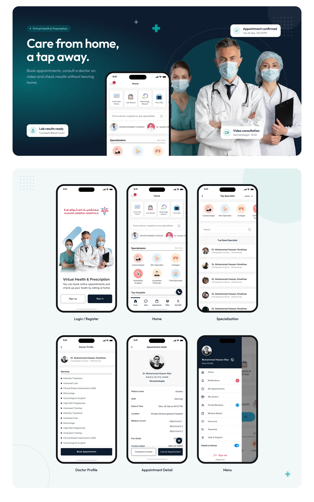
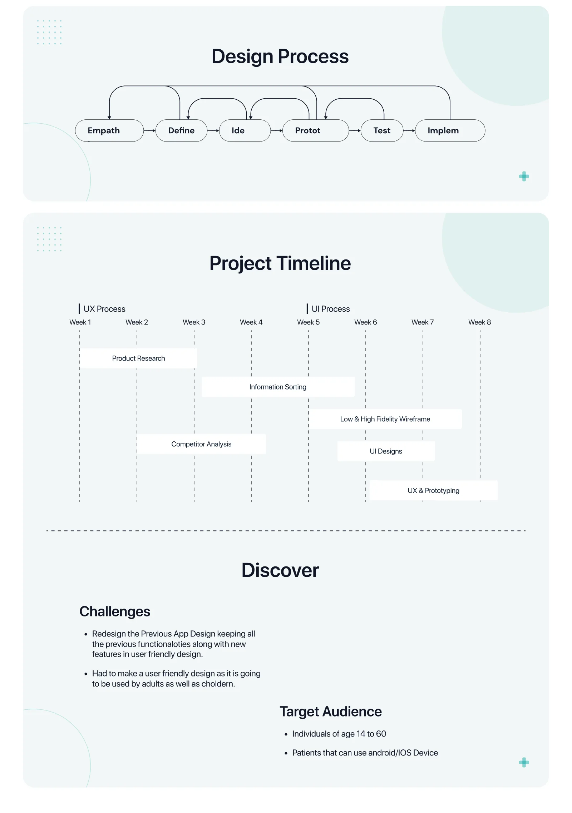
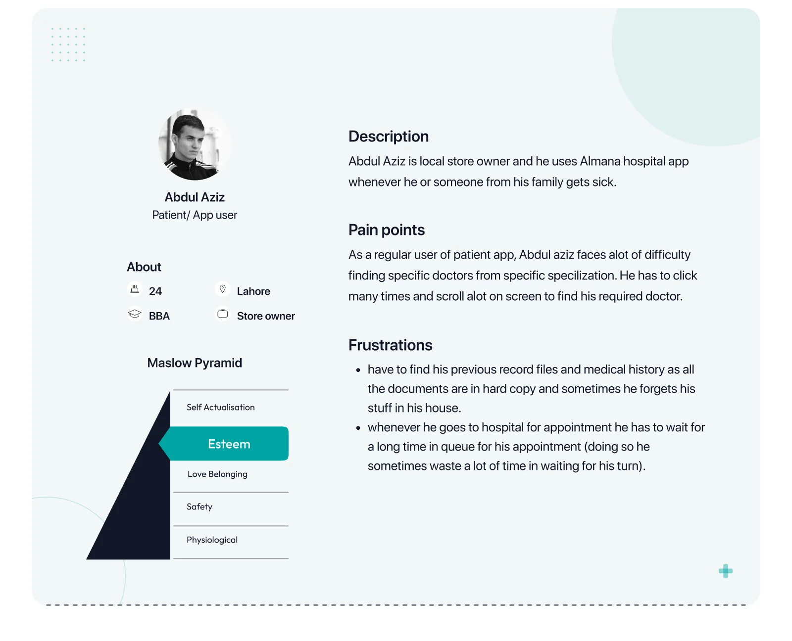
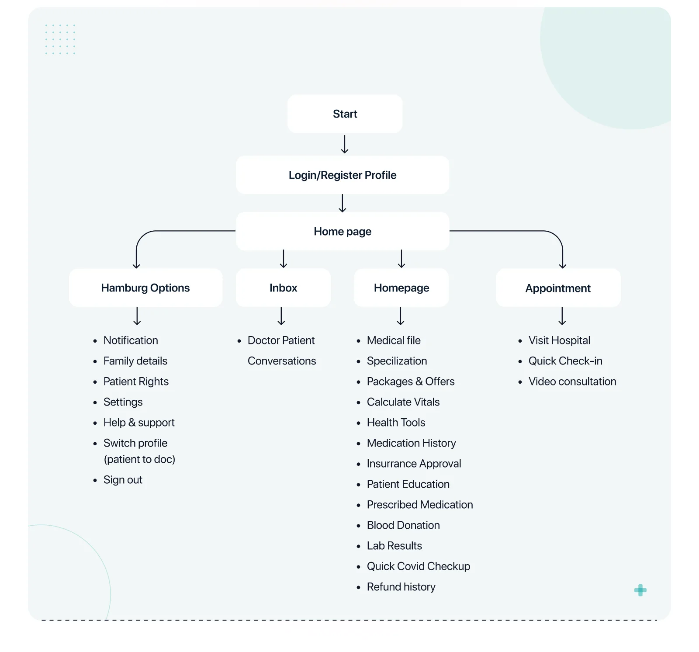
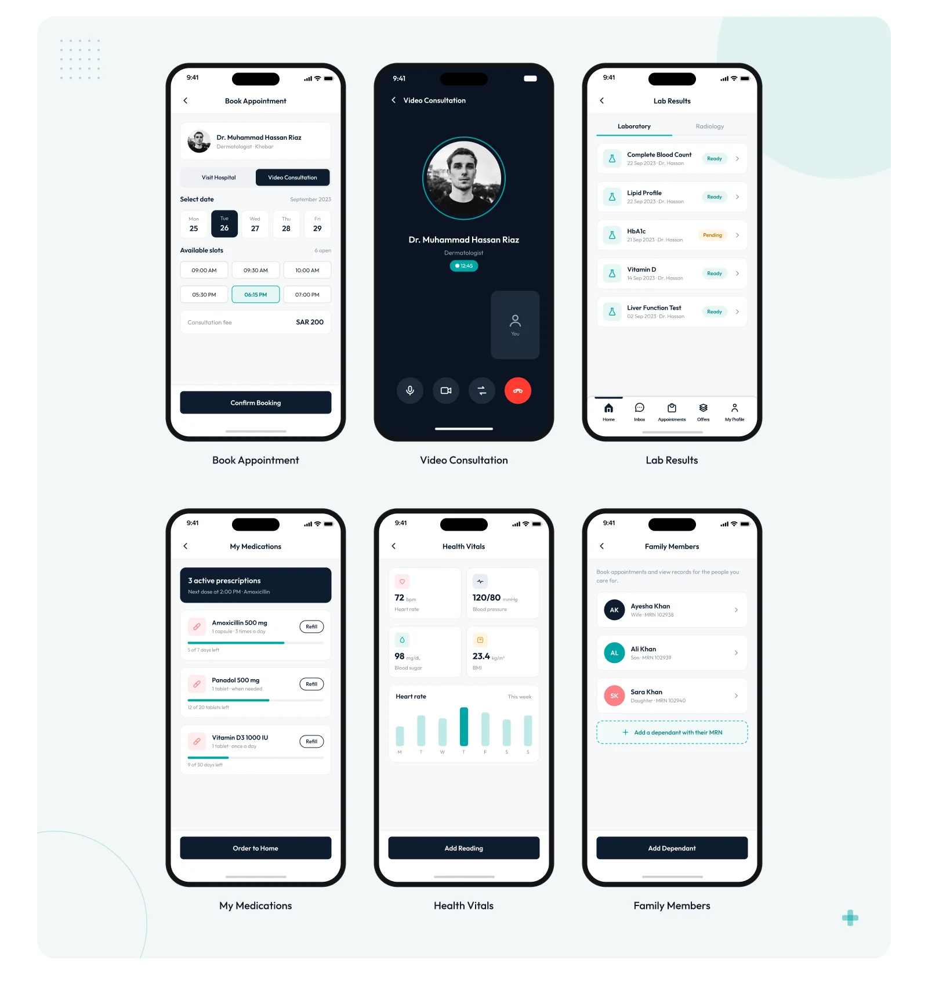

Almana Hospital
A patient app for viewing medical records, booking doctor’s appointments and quick check-ins, requesting medication refills and seeing lab and radiology results.
- Role
- UX Researcher, UI Designer & Product Designer
- Audience
- Patients aged 14 to 65
- Platform
- Mobile app (Android and iOS)

The product
Almana General Hospital’s mobile application gives patients access to their medical records, appointments, medication history, refills and results.
During Covid, seeing a doctor in person put patients and doctors at risk.
The app was built for patients in Saudi Arabia when doctors were avoiding in-person visits, because sick patients could catch Covid at the hospital or pass the virus on to their doctor.
Redesign the previous app without losing anything.
Keep all the existing functionality, add new features, and make it friendly enough for both adults and children to use.
Objectives and goals
Remote appointments
Let patients book appointments for themselves and their dependants remotely.
Medicine and vitals
Help patients keep track of their medicine and vitals.
Medication at home
Let patients order medication to their home.
Reports and records
Help patients keep track of lab reports and their dependants’ medical details.
Design process and timeline

What others do well, and badly
Dr. Sulaiman Al Habib app
Well known in Saudi Arabia and a strong competitor thanks to online appointments and a virtual hospital tour. Appointments and payments from home are easy, and tiles on the home screen put every needed button up front.
Mouwasat Hospital
Less well known, with fewer features in its online app. The experience is hard to navigate for a non-expert user.
What sets the app apart
Video consultation or hospital visit appointments
Radiology and laboratory reports
Doctor search by department, location and specialisation
Dependants added with their medical record number
Patient vitals calculator and health tools
Prescribed medication with home delivery
Abdul Aziz, a regular patient
Abdul Aziz is a local store owner who uses the Almana app whenever he or someone in his family gets sick. Finding a doctor in a specific specialisation takes many taps and a lot of scrolling, his records are in hard copy, and he waits in long queues for appointments.

From login to appointment

Everything a patient needs, in one app
Six more screens cover the rest of the patient journey: booking a visit or video consultation, the call itself, lab results, medication refills, health vitals and family members.
